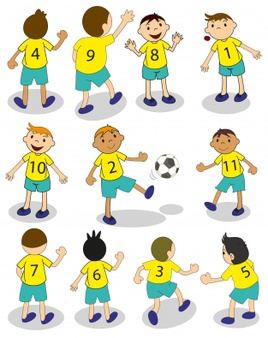

Software: Python
All software used in this course is free and open source.
No Python yet? The separate Python course (folder Python_Course) starts from zero – all notebooks run in Google Colab.
Contents – Part 1
Revision material
Parts 1 and 2 revise the descriptive statistics that Parts 3–5 build on. Use them to refresh your knowledge – with the exercises and the notebook.
Learning objectives – Part 1
After this part you will be able to …
- name the basic concepts (statistical unit, variable, value, observation) and the levels of measurement,
- compute absolute, relative and cumulative frequencies and read off shares (“at most”, “at least”),
- compute and interpret measures of central tendency (means, median, mode, quantiles),
- average growth rates with the geometric mean,
- compute and compare measures of dispersion ($R$, IQR, $s^2$, $s$, $v$, $v^*$),
- choose the right measure for a given comparison,
- carry out every computation in Python.
Running story: the shoe sizes of a soccer team – in numbers (Part 1), in pictures (Part 2). Exercises follow every topic; an exam-style exercise closes the part.
List of Symbols (1)
| Symbol | Meaning | Symbol | Meaning |
|---|---|---|---|
| $\omega$ | Statistical unit | $h_j$ | Absolute frequency |
| $n$ | Number of statistical units | $f_j$ | Relative frequency |
| $X$ | Variable | $H_j$ | Cumulative absolute frequency |
| $x$ | Value (category) | $F(x)$ | Empirical distribution function |
| $x_i$ | Observation | $x_j$ | Value (class $j$) |
| $x_{(i)}$ | $i$-th value of the ordered sample | $k$ | Number of distinct values |
| $\sum$ | Sum (summation sign) | $\prod$ | Product (product sign) |
List of Symbols (2)
| Symbol | Meaning | Symbol | Meaning |
|---|---|---|---|
| $\bar{x}$ | Arithmetic mean | $s^2$ | Variance (sample) |
| $\bar{x}_{\text{trim}}$ | Trimmed mean | $s$ | Standard deviation |
| $\bar{x}_{\text{geo}}$ | Geometric mean | $R$ | Range |
| $r_i$ | Growth rate in period $i$ | $\text{IQR}$ | Interquartile range |
| $1 + r_i$ | Growth factor in period $i$ | $v$ | Coefficient of variation |
| $\tilde{x}$ | Median | $v^*$ | Normalised coeff. of variation |
| $x_{p}$ | $p$-quantile | $\lceil\cdot\rceil$, $\lfloor\cdot\rfloor$ | Rounding up / down to an integer |
| $Q_1,\,Q_3$ | 1st and 3rd quartile | $x_{0.25},\,x_{0.75}$ | 25 %- and 75 %-quantile |
Symbols for regression ($s_{xy}$, $r$, $\beta_0,\beta_1$, $R^2$, …) are introduced in Part 4.
Basic Concepts
- Statistical unit ($\omega$):
- Individual object being observed. Must be delimited in terms of subject matter, time and location, e.g. a particular day at a particular weather station (variable: the daily maximum temperature).
- $n$:
- The number of statistical units
- Sample:
- The collected set of statistical units
- Population:
- The overarching set from which the sample was drawn
Basic Concepts: Variable and Observed Values
- Variable ($X$):
- A characteristic of the statistical unit. There may be several characteristics; which one is examined must be specified.
- Values ($x$):
- Possible values that the variable can take.
- Observation ($x_i$):
- The value that was actually observed for the variable at the $i$-th statistical unit.
Basic Concepts – Summary
| Term | Symbol | Explanation | Example |
|---|---|---|---|
| Statistical unit | $\omega$ | Unit of analysis | Persons, institutions, objects |
| Variable | $X$ | Characteristic of interest of a statistical unit | Age, market value, weight, height, costs, rating, product count, colour |
| Value | $x$ | Possible values, states or categories that a variable can take | 18, 19, 20, … years; grades 1 to 5; yes or no; black, white, blue, … |
| Observation | $x_i$ | The value actually observed at the $i$-th statistical unit | 31 years, 1300 euros, 23 cm, 73 kg, black |
Running example of this part
$\omega$ = a player ($n = 11$), $X$ = shoe size, values $x$: 37, 38, …, observation of player 1: $x_1 = 40$
Data Collection and Survey Types
Data Collection
- Primary data: Data collected specifically for this study
- Secondary data: Data taken from existing statistics
Survey Types
- Observation
- Interview / Questionnaire
- Experiment
Data Protection
- Regulated by law, e.g. the GDPR
- Regulation (EU) 2016/679 of the European Parliament and of the Council of 27 April 2016 on the protection of natural persons with regard to the processing of personal data, on the free movement of such data, and repealing Directive 95/46/EC
- As well as further national legislation
Important
Compliance with data protection is a prerequisite for data analysis!
Levels of Measurement (1)
| Term | Explanation | Meaningful operations | Example |
|---|---|---|---|
| Nominal scale | Category only, no ordering | $=$, $\neq$ | Colour, gender, origin, occupation |
| Ordinal scale | Ranking possible, differences not meaningful | additionally $<$, $>$ | Attitudes, well-being, grades |
| Metric scale | Ranking possible, differences meaningful | additionally $+$, $-$ | Monetary units, temperatures |
Each level allows everything the level above it in the table allows – and one thing more. The higher the level, the more we may compute with the data.
Levels of Measurement (2)
- Categorical data includes nominal and ordinal data.
- The metric level splits into the interval and the ratio scale: “twice as expensive” makes sense for prices, “twice as warm” does not for °C.
Important
A metric level of measurement is a prerequisite for most of the statistical analyses covered in this course!
Levels of Measurement with Python
import pandas as pd
# Nominal: categories without an order -> data type "category"
colour = pd.Series(["black", "white", "blue", "black"], dtype="category")
print((colour == "black").tolist()) # [True, False, False, True] (=, != only)
# Ordinal: categories WITH an order (clothing sizes S < M < L < XL)
size = pd.Series(pd.Categorical(["M", "S", "XL", "M"],
categories=["S", "M", "L", "XL"], ordered=True))
print(size.max(), (size > "S").sum()) # XL 3 (additionally <, >)
# Metric: numbers -> differences (and means) are meaningful
price = pd.Series([19.90, 24.90, 29.90, 19.90]) # euros
print(round(price.max() - price.min(), 2), round(price.mean(), 2)) # 10.0 23.65
Pitfall: numbers used as codes
pandas treats every number column as metric. Codes such as customer IDs must be converted with .astype("category") – otherwise .mean() returns a meaningless value.
Exercise – Levels of Measurement
An online retailer records the following variables for every order (statistical unit):
| Variable | Variable | ||
|---|---|---|---|
| 1 | Postcode of the delivery address | 5 | Order value in euros |
| 2 | Payment method (invoice, PayPal, card) | 6 | Delivery time in days |
| 3 | Customer rating (1 to 5 stars) | 7 | Customer status (new / regular / premium) |
| 4 | Number of items ordered | 8 | Order date (calendar date) |
- Assign each variable its level of measurement (nominal, ordinal, metric); give a brief reason.
- For the metric variables: interval or ratio scale? (Is “twice as much” meaningful?)
Solution – Levels of Measurement
Rule: nominal $\to$ categories; ordinal $\to$ $+$ ranking; metric $\to$ $+$ differences; ratio $\to$ $+$ natural zero.
| Variable | Level | Reason | |
|---|---|---|---|
| 1 | Postcode | nominal | the number is only a code, no ranking |
| 2 | Payment method | nominal | categories without an order |
| 3 | Customer rating | ordinal | clear ranking, but distances between stars not comparable |
| 4 | Number of items | metric (ratio) | differences (3 items more) and ratios meaningful |
| 5 | Order value | metric (ratio) | natural zero (0 euros); “twice as expensive” meaningful |
| 6 | Delivery time | metric (ratio) | differences (2 days longer) and ratios meaningful |
| 7 | Customer status | ordinal | new $<$ regular $<$ premium, but no measurable distance |
| 8 | Order date | metric (interval) | distances in days meaningful, but no natural zero |
Remember
Numbers used as codes say nothing about the level of measurement: postcodes are nominal – an “average postcode” is meaningless.
Frequencies
Frequencies
For each distinct value $x_j$ ($j = 1, \ldots, k$) of the variable, sorted in ascending order:
| Frequency | Formula | Answers the question … |
|---|---|---|
| Absolute | $h_j = \#\{ i \mid x_i = x_j \}$ | How often does the value $x_j$ occur? |
| Relative | $f_j = \dfrac{h_j}{n}$ | Which share of the observations equals $x_j$? |
| Cumulative absolute | $H_j = \sum_{l \le j} h_l$ | How many observations are $\le x_j$? |
| Cumulative relative | $F(x) = \sum_{x_j \le x} f_j$ | Which share of the observations is $\le x$? |
Count, divide by $n$, add up from the left. Checks: $\sum_j h_j = n$ and $\sum_j f_j = 1$; the last cumulative values are $H_k = n$ and $F = 1$.
The Data – an Example (1)
The statistical units: the players of a soccer team

The Data – an Example (2)
The variable: The shoe sizes of a soccer team with the following observations:
40, 39, 38, 41, 46, 39, 39, 38, 37, 40, 39
One token per player: click Sorted, then Stacked by value – the stacks are the absolute frequencies of the next slide.
Frequency Table
| Shoe size | 37 | 38 | 39 | 40 | 41 | 46 | Total |
|---|---|---|---|---|---|---|---|
| Absolute frequency | 1 | 2 | 4 | 2 | 1 | 1 | 11 |
| Relative frequency (decimal) | $0.0909$ | $0.1818$ | $0.3636$ | $0.1818$ | $0.0909$ | $0.0909$ | 1 |
| Relative frequency in % | $9.1\,\%$ | $18.2\,\%$ | $36.4\,\%$ | $18.2\,\%$ | $9.1\,\%$ | $9.1\,\%$ | $100\,\%$ |
| Relative frequency (fraction) | $\tfrac{1}{11}$ | $\tfrac{2}{11}$ | $\tfrac{4}{11}$ | $\tfrac{2}{11}$ | $\tfrac{1}{11}$ | $\tfrac{1}{11}$ | 1 |
| Cumulative absolute frequency | 1 | 3 | 7 | 9 | 10 | 11 | |
| Cumulative rel. freq. (decimal) | $0.0909$ | $0.2727$ | $0.6364$ | $0.8182$ | $0.9091$ | 1 | |
| Cumulative rel. freq. (fraction) | $\tfrac{1}{11}$ | $\tfrac{3}{11}$ | $\tfrac{7}{11}$ | $\tfrac{9}{11}$ | $\tfrac{10}{11}$ | 1 |
Hover over a column, or click it to keep it selected: one shoe size through all rows, read out in words.
Comparing Relative Frequencies: Percent vs. Percentage Points
Example: In a customer survey, the share of 5-star ratings rises from $f = 40\,\%$ last year to $f = 50\,\%$ this year.
Absolute difference of two shares
Relative change of the share
“The share rose by 10 percentage points” and “the share rose by 25 %” describe the same change – once as a difference, once relative to the starting level.
Percentage points = absolute difference of two percentages; percent = relative change. The two are often confused in business news!
Exercise – Frequencies of a Nominal Variable
The online retailer from the exercise on levels of measurement records the payment method of $n = 10$ orders (I = invoice, P = PayPal, C = card):
\[ \text{P,\ C,\ I,\ P,\ P,\ C,\ P,\ I,\ C,\ P} \]
- Determine the absolute frequencies $h_j$ and the relative frequencies $f_j$ (fraction, decimal, %).
- Which share of the orders is not paid by invoice? How many orders is that?
- Last month, $25\,\%$ of the orders were paid by invoice. By how many percentage points and by how many percent has this share changed?
- Does a cumulative relative frequency $F(x)$ make sense here? Give a reason.
Solution (1/2) – Frequencies of a Nominal Variable
Rule
$h_j$ = number of values equal to $x_j$; $f_j = h_j / n$; checks: $\sum_j h_j = n$ and $\sum_j f_j = 1$.
a) Count the $n = 10$ orders (I: 2 times, P: 5 times, C: 3 times); column “Total” = check:
| Payment method $x_j$ | Invoice | PayPal | Card | Total |
|---|---|---|---|---|
| Absolute frequency $h_j$ | $2$ | $5$ | $3$ | $10$ |
| Relative frequency $f_j$ (fraction) | $\tfrac{2}{10}$ | $\tfrac{5}{10}$ | $\tfrac{3}{10}$ | $1$ |
| Relative frequency $f_j$ (decimal) | $\mathbf{0.20}$ | $\mathbf{0.50}$ | $\mathbf{0.30}$ | $1$ |
| Relative frequency in % | $20\,\%$ | $50\,\%$ | $30\,\%$ | $100\,\%$ |
b) “Not by invoice” = PayPal or card: $f_{\text{PayPal}} + f_{\text{card}} = 0.50 + 0.30 = \mathbf{0.80}$ ($= 1 - f_{\text{invoice}}$),
i.e. $0.80 \cdot 10 = \mathbf{8}$ orders (check: $h_{\text{PayPal}} + h_{\text{card}} = 5 + 3 = 8$).
Solution (2/2) – Frequencies of a Nominal Variable
c) Share paid by invoice: last month $25\,\%$, now $f_{\text{invoice}} = 20\,\%$:
- absolute difference: $20\,\% - 25\,\% = \mathbf{-5}$ percentage points
- relative change: $(20\,\% - 25\,\%) / 25\,\% = -0.20 = \mathbf{-20\,\%}$
d) No: the payment method is nominal – there is no ordering, so “$x_j \leq x$” is not defined. A cumulative value “up to PayPal” would depend on the arbitrary order of the columns:
- order invoice, PayPal, card: $0.20 + 0.50 = 0.70$
- order card, PayPal, invoice: $0.30 + 0.50 = 0.80$
Remember
$h_j$ and $f_j$ exist for every level of measurement, $F(x)$ only from the ordinal level upwards.
Why Statistics Software?
Advantages of Modern Software
- Complex calculations in seconds
- Reproducible analyses through scripts
- Professional visualisations
- Ability to handle large datasets
In this course: We use Python with Jupyter notebooks or VS Code
.py / .ipynb)www.python.org
What is Python?
- Python is a programming language for statistics, data analysis and much more.
- Typical application areas:
- Data Science
- Statistics
- Machine Learning
- Scientific research
- Strengths of Python:
- Easy-to-read syntax, huge community, free and open source
- Large selection of packages (
numpy,pandas,scipy,statsmodels,matplotlib) - Same language from data analysis to machine learning and production
- Important: Python + packages are the computation engine (perform calculations).
Working Environment: Jupyter and VS Code
- Jupyter notebooks (
.ipynb) and VS Code are the working environments (IDEs) for Python. - They provide a user-friendly interface:
- Jupyter: code cells with tables and plots directly below, plus text for explanations
- VS Code: editor for scripts (
.py) and notebooks, integrated terminal - Plot windows, variable explorer, package management
- Analogy:
- Python = Engine of a car
- Jupyter / VS Code = Dashboard and steering wheel
- Important: Jupyter and VS Code only work if Python is installed.
Installation (Mac & Windows)
- Step 1: Install Python
- Recommended: Anaconda Distribution (
https://www.anaconda.com/download) – bundles Python, all packages and Jupyter - Alternative: Python from
https://www.python.org, then in a terminal:
pip install numpy pandas scipy statsmodels matplotlib jupyter
- Recommended: Anaconda Distribution (
- Step 2: Choose a working environment
- Jupyter: start JupyterLab (included in Anaconda) or run
jupyter lab - VS Code:
https://code.visualstudio.com+ extensions “Python” and “Jupyter”
- Jupyter: start JupyterLab (included in Anaconda) or run
- Step 3: First test – run in a notebook cell; no error message means you are ready:
import numpy, pandas, scipy, statsmodels, matplotlib print(numpy.__version__, pandas.__version__)
Frequencies with Python
import pandas as pd # Soccer team – shoe sizes of the 11 players data = pd.Series([40, 39, 38, 41, 46, 39, 39, 38, 37, 40, 39]) # Frequency table (absolute frequencies), sorted by shoe size print(data.value_counts().sort_index()) # Relative frequencies print(data.value_counts(normalize=True).sort_index()) # Cumulative (relative) frequencies print(data.value_counts(normalize=True).sort_index().cumsum()) # Percentage points vs. percent (share of 5-star ratings: 40 % -> 50 %) print(50 - 40, round((50 - 40) / 40, 4)) # 10 0.25
Note: value_counts() sorts by frequency; sort_index() orders by shoe size (needed for cumsum()).
Column Chart
Switch the x-axis and the height; hover over a column for $h_j$ and $f_j$.
Bar Chart
Switch the order of the bars; hover over a bar for $h_j$ and $f_j$.
Pie Chart
Each slice stands for one shoe size; its angle is proportional to the share: $\text{angle}_j = f_j \cdot 360^\circ$.
Click a slice to select it; hovering previews its numbers.
Empirical Distribution Function (Empirical CDF, ECDF)
Drag the orange handle on the x-axis (or use the slider) and switch between “at most” and “at least”.
Charts with Python
import matplotlib.pyplot as plt
counts = data.value_counts().sort_index() # h_j: 37:1, 38:2, 39:4, 40:2, 41:1, 46:1
plt.bar(counts.index, counts.values) # column chart (numeric axis: gap 41-46)
plt.xlabel("Shoe size"); plt.ylabel("Absolute frequency")
plt.show()
plt.barh(counts.index, counts.values) # bar chart (horizontal bars)
plt.show()
plt.pie(counts.values, labels=counts.index) # pie chart: slice = share f_j
plt.show()
plt.ecdf(data) # empirical distribution function F(x)
plt.show()
Note: plt.ecdf() needs matplotlib 3.8 or newer (included in Anaconda and Colab); plt.show() displays each chart below the cell.
Exercise – Frequency Table
A café has received $n = 12$ ratings (1 to 5 stars) on a review platform:
\[ 4,\ 5,\ 3,\ 4,\ 5,\ 5,\ 2,\ 4,\ 5,\ 3,\ 4,\ 5 \]
- Set up the frequency table with absolute frequencies $h_j$, relative frequencies $f_j$ (as fraction and decimal) and cumulative relative frequencies $F(x_j)$.
- What share of the ratings has at most 3 stars?
- What share of the ratings has at least 4 stars? How many ratings is that?
- Read from the table: which rating is the most frequent one?
- Last year, 30 % of the ratings had 5 stars. By how many percentage points and by how many percent has this share changed?
Solution (1/2) – Frequency Table
Rule
$h_j$ = number of values equal to $x_j$; $f_j = h_j / n$; $F(x_j)$ = sum of all $f_l$ with $x_l \leq x_j$.
a) Count the $n = 12$ values (check: the $h_j$ add up to $12$, the $f_j$ to $1$):
| Stars $x_j$ | 2 | 3 | 4 | 5 | Total |
|---|---|---|---|---|---|
| Absolute frequency $h_j$ | 1 | 2 | 4 | 5 | 12 |
| Relative frequency $f_j$ (fraction) | $\tfrac{1}{12}$ | $\tfrac{2}{12}$ | $\tfrac{4}{12}$ | $\tfrac{5}{12}$ | 1 |
| Relative frequency $f_j$ (decimal) | $0.0833$ | $0.1667$ | $0.3333$ | $0.4167$ | 1 |
| Cumulative rel. frequency $F(x_j)$ | $0.0833$ | $\mathbf{0.2500}$ | $0.5833$ | $1$ |
b) “At most 3 stars” = cumulative relative frequency at $x = 3$: $F(3) = f_1 + f_2 = \tfrac{1}{12} + \tfrac{2}{12} = \tfrac{3}{12} = \mathbf{0.25}$ ($x_1 = 2$, $x_2 = 3$) $\to$ a quarter of the ratings.
Solution (2/2) – Frequency Table
c) “At least 4 stars” = complement of “at most 3”: $1 - F(3) = 1 - 0.25 = \mathbf{0.75}$, i.e. $h_3 + h_4 = 4 + 5 = \mathbf{9}$ ratings.
d) Largest absolute frequency $h_4 = 5$ at $x_4 = 5$ $\to$ the most frequent rating is $\mathbf{5}$ stars.
e) This year $f_4 = \tfrac{5}{12} = 41.67\,\%$ (last year: $30\,\%$):
- absolute difference: $41.67\,\% - 30\,\% = \mathbf{11.67}$ percentage points
- relative change: $(41.67\,\% - 30\,\%) / 30\,\% = 0.389 = \mathbf{38.9\,\%}$
stars = pd.Series([4, 5, 3, 4, 5, 5, 2, 4, 5, 3, 4, 5]) print(stars.value_counts().sort_index().tolist()) # [1, 2, 4, 5] F = stars.value_counts(normalize=True).sort_index().cumsum() print(F.round(4).tolist()) # [0.0833, 0.25, 0.5833, 1.0] print((stars <= 3).mean(), (stars >= 4).sum()) # 0.25 9
Interpretation
Three quarters of the guests give 4 or 5 stars; the share of top ratings has grown.
Measures of Central Tendency
Measures of Central Tendency
Which shoe size is “typical” for the soccer team – and how do we summarise eleven values in a single number?
- Where is the middle?
- Where is the centre of gravity of the distribution?
- At which value is one quarter of the values reached?
- At which value are three quarters of the values reached?
Ask a question, then click its button to show the measure that answers it.
Refresher: Summation and Product Signs
Example data (first three players): $x_1 = 40$, $x_2 = 39$, $x_3 = 38$
Summation sign $\Sigma$
\[ \sum_{i=1}^{n} x_i = x_1 + x_2 + \cdots + x_n \]
Read: “sum of the $x_i$ for $i$ from $1$ to $n$”
Example: $\sum_{i=1}^{3} x_i = 40 + 39 + 38 = 117$
Product sign $\Pi$
\[ \prod_{i=1}^{n} x_i = x_1 \cdot x_2 \cdots x_n \]
Read: “product of the $x_i$ for $i$ from $1$ to $n$”
Example: $\prod_{i=1}^{3} x_i = 40 \cdot 39 \cdot 38 = 59\,280$
Common mistake
$\sum x_i^2 \neq \bigl(\sum x_i\bigr)^2$, e.g. $1^2 + 2^2 = 5 \neq (1+2)^2 = 9$: first square, then add (as in the variance later)!
Means (1): Arithmetic Mean and Trimmed Mean
Arithmetic mean
Sum of all values divided by $n$: $\displaystyle \bar{x} = \frac{1}{n}\sum_{i=1}^{n} x_i$
the value every unit would have if the total were shared out equally.
Advantage: easy to compute. Disadvantage: sensitive to extreme values (outliers).
Trimmed mean $\bar{x}_{\text{trim}}$
Choose a share $\alpha$ (e.g. $10\,\%$) to cut off at each end: remove the $\lfloor \alpha \cdot n \rfloor$ smallest and the $\lfloor \alpha \cdot n \rfloor$ largest values ($\lfloor\cdot\rfloor$ = round down), then take the arithmetic mean of the rest.
Example (shoe sizes, $\alpha = 10\,\%$): $\lfloor 0.1 \cdot 11 \rfloor = 1$ value per end $\to$ remove $37$ and $46$:
\[ \bar{x}_{\text{trim}} = \frac{436 - 37 - 46}{9} = \frac{353}{9} = 39.2222 \]
Means (2): Geometric Mean – Averaging Growth Rates
Geometric mean (only for positive values)
Product of all values, $n$-th root: $\bar{x}_{\text{geo}} = \bigl(\prod_{i=1}^{n} x_i\bigr)^{1/n} = \sqrt[n]{x_1 \cdot x_2 \cdots x_n}$
Motivation: revenue grows by $r_1 = +20\,\%$ in year 1 and by $r_2 = -10\,\%$ in year 2. Is the average growth $(20\,\% - 10\,\%)/2 = 5\,\%$ per year? No!
- Growth rate $r_i$ $\to$ growth factor $1 + r_i$: $1.20$ and $0.90$
- Factors multiply: $1.20 \cdot 0.90 = 1.08$, i.e. $+8\,\%$ in total
- Average factor: $\bar{x}_{\text{geo}} = \sqrt{1.08} = 1.0392$ $\to$ $\mathbf{+3.92\,\%}$ per year
- Check: $1.0392^2 \approx 1.08$ $\checkmark$, whereas $1.05^2 = 1.1025 \neq 1.08$
Pick an example or move the growth rates $r_1$ and $r_2$.
Average growth rate $= \bar{x}_{\text{geo}}$ of the growth factors $1 + r_i$, minus $1$. $\bar{x}_{\text{geo}}$ is the constant factor that produces the same total growth.
Median
Definition
At or below which observation do at least 50 % of the values lie?
- Computation:
- sort the data; the median is the value at position $\lceil n/2 \rceil$: $\tilde{x} = x_{(\lceil n/2 \rceil)}$
Note: alternative definition
In some textbooks, the median for even $n$ is defined as the average of the two middle values (the “middle value”). In this course, we use the $\lceil n/2 \rceil$ definition.
Advantages of the $\lceil n/2 \rceil$ definition:
- The median is always an actual observation
- Consistent with the quantile definition: Median = 50 %-quantile $= x_{(\lceil 0.5 \cdot n \rceil)}$
Advantages of the median in general:
- Robust to outliers
- Also suitable for ordinal data
Mode
Definition
The most frequent value in the distribution
- Advantage: suitable for both ordinal and nominal data
- Disadvantage: often not unique
- Disadvantage: may not represent the “centre” of the distribution
Which Measure for Which Level of Measurement?
| Level | Mode | Median, quantiles | Arithmetic mean |
|---|---|---|---|
| Nominal | ✓ | – | – |
| Ordinal | ✓ | ✓ | – |
| Metric | ✓ | ✓ | ✓ |
- Median and quantiles need a ranking, the mean needs meaningful differences.
- The geometric mean needs positive values on a ratio scale (e.g. growth factors).
Back to the online retailer (exercise in the Fundamentals)
Mean (and median, mode): number of items, order value, delivery time, order date
Median (and mode), no mean: customer rating, customer status
Only the mode: postcode, payment method
Measures of Central Tendency – Example
| Player | 1 | 2 | 3 | 4 | 5 | 6 | 7 | 8 | 9 | 10 | 11 |
|---|---|---|---|---|---|---|---|---|---|---|---|
| Shoe size | 40 | 39 | 38 | 41 | 46 | 39 | 39 | 38 | 37 | 40 | 39 |
| Measure | Value |
|---|---|
| Sum | 436 |
| Arithmetic mean | 39.6364 |
| Geometric mean | 39.5755 |
| Trimmed mean (10 % per end) | 39.2222 |
| Median | 39 |
| Mode | 39 |
Drag the orange dot (player 5) and move the trim share $\alpha$; hollow dots are cut off by trimming.
Exercise – Mean, Median and Mode
An electronics shop records the number of laptops sold on $n = 9$ days:
\[ 4,\ 7,\ 3,\ 5,\ 4,\ 6,\ 4,\ 2,\ 10 \]
- Compute the arithmetic mean, the median, the mode and the trimmed mean with $\alpha = 20\,\%$.
- On day 9 the shop actually sold $19$ laptops (a large company order), not $10$. Which of the four measures change, and to which value?
- $n = 7$ customers rate the service: good, very good, fair, good, poor, good, very good.
Which of the measures may be used for this variable? Determine them.
Solution (1/2) – Mean, Median and Mode
Rule
Sort first; $\bar{x} = \frac{1}{n}\sum x_i$; median $= x_{(\lceil n/2 \rceil)}$; mode = most frequent value;
trimmed mean: drop $\lfloor \alpha \cdot n \rfloor$ values at each end, then average the rest.
a) Sorted data: $2,\ 3,\ 4,\ 4,\ 4,\ 5,\ 6,\ 7,\ 10$ (sum $= 45$)
Calculation
\begin{align*} \bar{x} &= \frac{45}{9} = \mathbf{5}, \qquad \tilde{x} = x_{(\lceil 9/2 \rceil)} = x_{(5)} = \mathbf{4}, \qquad \text{mode} = \mathbf{4} \ (\text{occurs 3 times}) \\[10pt] \bar{x}_{\text{trim}} &= \frac{45 - 2 - 10}{7} = \frac{33}{7} = \mathbf{4.7143} \qquad (\lfloor 0.2 \cdot 9 \rfloor = \lfloor 1.8 \rfloor = 1 \text{ value removed per end}) \end{align*}b) With $19$ instead of $10$ the sum grows by $9$ to $54$ $\to$ $\bar{x} = 54 / 9 = \mathbf{6}$ (up by $1$). The order is unchanged ($19$ is still the largest value) $\to$ median $= \mathbf{4}$, mode $= \mathbf{4}$ and $\bar{x}_{\text{trim}} = (54 - 2 - 19) / 7 = \mathbf{4.7143}$ stay the same.
Solution (2/2) – Mean, Median and Mode
c) The service rating is ordinal: the categories have a ranking (poor $<$ fair $<$ good $<$ very good), but the distances between them are not meaningful.
- Sorted: poor, fair, good, good, good, very good, very good
- Median: $x_{(\lceil 7/2 \rceil)} = x_{(4)} = $ good
- Mode: good (3 of the 7 ratings)
- Arithmetic (and trimmed) mean: not meaningful – “(good + poor) / 2” is not defined, and the step from poor to fair need not equal the step from good to very good.
Interpretation
A single extreme day moves the mean ($5 \to 6$), but not the median, the mode or the trimmed mean: these are robust to outliers. For ordinal data, use the median and the mode.
Arithmetic Mean from a Frequency Table
Idea: if the data are given as a frequency table, each value $x_j$ enters the sum $h_j$ times.
Rule
\[ \bar{x} = \frac{1}{n}\sum_{j=1}^{k} h_j \cdot x_j = \sum_{j=1}^{k} f_j \cdot x_j \qquad (k = \text{number of distinct values}) \]
| Shoe size $x_j$ | 37 | 38 | 39 | 40 | 41 | 46 | Total |
|---|---|---|---|---|---|---|---|
| $h_j$ | 1 | 2 | 4 | 2 | 1 | 1 | 11 |
| $h_j \cdot x_j$ | 37 | 76 | 156 | 80 | 41 | 46 | 436 |
$\bar{x} = \frac{436}{11} = \mathbf{39.6364}$ – the same result as from the raw data.
a weighted mean: every value counts as often as it occurs; the weights are the relative frequencies $f_j$.
Measures of Central Tendency with Python (1)
import numpy as np from scipy import stats # Sum print(data.sum()) # 436 # Arithmetic mean print(data.mean()) # 39.6364 # Geometric mean # Step 1: Calculate the product of all values product = np.prod(data) # Step 2: Determine the number of observations n = len(data) # Step 3: Take the n-th root gmean = product ** (1 / n) # 39.5755 print(stats.gmean(data)) # same result in one step
Measures of Central Tendency with Python (2)
# Trimmed mean: 10% of the values are removed at EACH end print(stats.trim_mean(data, 0.10)) # 39.2222 # Median print(np.median(data)) # 39.0 # Mode (all most frequent values, as a list) print(data.mode().tolist()) # [39] # Mean from a frequency table: weighted mean print(np.average([37, 38, 39, 40, 41, 46], weights=[1, 2, 4, 2, 1, 1])) # 39.6364
Note: NumPy's median definition
For even $n$, np.median() averages the two middle values – the course definition $x_{(\lceil n/2 \rceil)}$ is obtained with np.quantile(data, 0.5, method="inverted_cdf").
Quantiles
First, the values must be sorted!
- 1st quartile:
- At or below which value do at least 25 % of the values lie?
- 2nd quartile:
- = Median (at or below which value do at least 50 % of the values lie?)
- 3rd quartile:
- At or below which value do at least 75 % of the values lie?
- Arbitrary $p$-quantile:
- At or below which value do at least $p \cdot 100\,\%$ of the values lie?
Quantiles – Computation
Rule (course definition)
\[ x_p = x_{(\lceil n \cdot p \rceil)} \]
Compute $n \cdot p$ and round up to the next integer: this is the position in the sorted data. If $n \cdot p$ is already an integer, it stays as it is.
count $\lceil n \cdot p \rceil$ values from the bottom of the sorted list – at least $p \cdot 100\,\%$ of the observations lie at or below this value.
Example 80 %-quantile ($n = 11$): $n \cdot 0.8 = 11 \cdot 0.8 = 8.8$, round up to position 9 $\to$ $x_{0.8} = x_{(9)} = 40$.
Example $n = 10$, $p = 0.2$: $n \cdot p = 2$ is already an integer $\to$ position 2.
Quantiles – Computation Example
| Quantile | $p$ | $n \cdot p$ | Position | Value |
|---|---|---|---|---|
| 1st quartile | 0.25 | 2.75 | 3 | 38 |
| 2nd quartile | 0.50 | 5.50 | 6 | 39 |
| 3rd quartile | 0.75 | 8.25 | 9 | 40 |
| 17 %-quantile | 0.17 | 1.87 | 2 | 38 |
| 80 %-quantile | 0.80 | 8.80 | 9 | 40 |
| 5 %-quantile | 0.05 | 0.55 | 1 | 37 |
Click a row of the table or move $p$: position $k$ covers the interval $(k-1,\,k]$ of the $n \cdot p$ line, so $n \cdot p$ is rounded up.
Quantiles – Worked Example
Sorted data: 37, 38, 38, 39, 39, 39, 39, 40, 40, 41, 46
| Position $i$ | 1 | 2 | 3 | 4 | 5 | 6 | 7 | 8 | 9 | 10 | 11 |
|---|---|---|---|---|---|---|---|---|---|---|---|
| $x_{(i)}$ | 37 | 38 | 38 | 39 | 39 | 39 | 39 | 40 | 40 | 41 | 46 |
Exercise – Quantiles of Hotline Waiting Times
A customer hotline measures the waiting time (in minutes, rounded) of $n = 12$ calls:
\[ 3,\ 1,\ 5,\ 2,\ 6,\ 4,\ 2,\ 8,\ 3,\ 4,\ 2,\ 5 \]
- Sort the data.
- Determine the $10\,\%$-quantile, $Q_1$, the median, $Q_3$ and the $90\,\%$-quantile.
- The hotline wants to promise: “At least $90\,\%$ of our callers wait at most $x$ minutes.” What is the smallest $x$ supported by the data?
- A colleague reports a median of $3.5$ minutes. How did they obtain this value, and what is the median according to the course definition?
Solution (1/2) – Quantiles of Hotline Waiting Times
Rule
$x_p = x_{(\lceil n \cdot p \rceil)}$: round $n \cdot p$ up (an integer stays as it is); take the value at this position.
a) Sorted data ($x_{(1)}, \ldots, x_{(12)}$): $1,\ 2,\ 2,\ 2,\ 3,\ 3,\ 4,\ 4,\ 5,\ 5,\ 6,\ 8$
b) Quantiles for $n = 12$:
| Quantile | $p$ | $n \cdot p$ | Position | Value |
|---|---|---|---|---|
| $10\,\%$-quantile | $0.10$ | $1.2$ | $2$ | $x_{(2)} = \mathbf{2}$ |
| $Q_1$ | $0.25$ | $3.0$ | $3$ | $x_{(3)} = \mathbf{2}$ |
| Median | $0.50$ | $6.0$ | $6$ | $x_{(6)} = \mathbf{3}$ |
| $Q_3$ | $0.75$ | $9.0$ | $9$ | $x_{(9)} = \mathbf{5}$ |
| $90\,\%$-quantile | $0.90$ | $10.8$ | $11$ | $x_{(11)} = \mathbf{6}$ |
Note: $x_{0.1} = Q_1 = 2$ because of ties (three calls of exactly $2$ minutes) – only the position counts.
Solution (2/2) – Quantiles of Hotline Waiting Times
c) The promise asks for the $90\,\%$-quantile: $x_{0.9} = x_{(11)} = \mathbf{6}$ minutes.
- Check with the cumulative relative frequency: $F(6) = \tfrac{11}{12} = 0.9167 \geq 0.9$ $\checkmark$
- $5$ minutes are not enough: $F(5) = \tfrac{10}{12} = 0.8333 < 0.9$
d) The colleague averaged the two middle values $x_{(6)} = 3$ and $x_{(7)} = 4$: $(3 + 4) / 2 = 3.5$ – the alternative textbook definition for even $n$. The course definition gives $\tilde{x} = x_{(\lceil 12/2 \rceil)} = x_{(6)} = \mathbf{3}$ minutes.
Interpretation
At least half of the callers wait at most $3$ minutes and at least $90\,\%$ at most $6$ minutes – only the single caller with $8$ minutes waits longer.
Quantiles with Python
# Course definition x_(ceil(n*p)): method="inverted_cdf" # All standard quantiles at once (0, 25, 50, 75, 100 %) p = [0, 0.25, 0.50, 0.75, 1] print(np.quantile(data, p, method="inverted_cdf")) # [37 38 39 40 46] # 1st quartile (25%-quantile) print(np.quantile(data, 0.25, method="inverted_cdf")) # 38 # 80%-quantile print(np.quantile(data, 0.80, method="inverted_cdf")) # 40
Pitfall: the default method interpolates
np.quantile(data, 0.25) and data.quantile(0.25) use linear interpolation and return $38.5$ – always pass method="inverted_cdf" to get the course definition.
Exercise – Measures of Central Tendency and Quantiles
Annual salaries (in thousand euros) of the $n = 10$ employees of a department, including the head of department:
\[ 34,\ 42,\ 28,\ 120,\ 36,\ 31,\ 45,\ 34,\ 50,\ 39 \]
- Sort the data and compute the arithmetic mean, the median and the mode.
- Compute the trimmed mean (remove $10\,\%$ of the values at each end).
- Determine $Q_1$, $Q_3$ and the $20\,\%$- and $90\,\%$-quantiles.
- Which measure best describes the “typical” salary in the department? Give reasons.
Solution (1/4) – Measures of Central Tendency and Quantiles
Rule
Sort first; $\bar{x} = \frac{1}{n}\sum x_i$; median $= x_{(\lceil n/2 \rceil)}$; mode = most frequent value.
a) Sorted data ($x_{(1)}, \ldots, x_{(10)}$): $28,\ 31,\ 34,\ 34,\ 36,\ 39,\ 42,\ 45,\ 50,\ 120$
Calculation
\begin{align*} \bar{x} &= \frac{28 + 31 + 34 + 34 + 36 + 39 + 42 + 45 + 50 + 120}{10} = \frac{459}{10} = \mathbf{45.9} \\[8pt] \tilde{x} &= x_{(\lceil 0.5 \cdot 10 \rceil)} = x_{(5)} = \mathbf{36} \\[6pt] \text{Mode} &= \mathbf{34} \quad (\text{the only value that occurs twice}) \end{align*}The arithmetic mean ($45.9$) lies far above the median ($36$): $8$ of the $10$ employees earn less than the average.
Solution (2/4) – Measures of Central Tendency and Quantiles
b) Trimmed mean: $\lfloor 0.1 \cdot 10 \rfloor = 1$ value per end $\to$ remove $28$ and $120$, average the rest:
\[ \bar{x}_{\text{trim}} = \frac{31 + 34 + 34 + 36 + 39 + 42 + 45 + 50}{8} = \frac{311}{8} = \mathbf{38.875} \]
c) Rule: position $= \lceil n \cdot p \rceil$ in the sorted data; if $n \cdot p$ is already an integer, it is not rounded up.
| Quantile | $p$ | $n \cdot p$ | Position | Value |
|---|---|---|---|---|
| $20\,\%$-quantile | $0.20$ | $2.0$ | $2$ | $x_{(2)} = \mathbf{31}$ |
| $Q_1$ | $0.25$ | $2.5$ | $3$ | $x_{(3)} = \mathbf{34}$ |
| $Q_3$ | $0.75$ | $7.5$ | $8$ | $x_{(8)} = \mathbf{45}$ |
| $90\,\%$-quantile | $0.90$ | $9.0$ | $9$ | $x_{(9)} = \mathbf{50}$ |
Note: $x_{(3)} = x_{(4)} = 34$ – ties (equal values) do not change the rule; only the position counts.
Solution (3/4) – Measures of Central Tendency and Quantiles
d) The salary of the head of department ($120$) is an outlier and pulls the mean up to $45.9$ – a salary hardly anyone in the department earns. The median ($36$) and the trimmed mean ($38.9$) are robust to the outlier and describe the typical salary better.
Drag the orange dot (the head of department) and watch the three measures.
For skewed data with outliers (salaries, wealth, sales) always report the median and the mean – the gap between them reveals the skewness.
Solution (4/4) – Measures of Central Tendency and Quantiles
# Python check; course quantiles need method="inverted_cdf" salary = np.array([34, 42, 28, 120, 36, 31, 45, 34, 50, 39]) print(np.sort(salary)) print(salary.mean(), stats.trim_mean(salary, 0.10)) print(pd.Series(salary).mode().tolist()) print(np.quantile(salary, 0.5, method="inverted_cdf"), np.median(salary)) print(np.quantile(salary, [0.2, 0.25, 0.75, 0.9], method="inverted_cdf"))
[ 28 31 34 34 36 39 42 45 50 120] 45.9 38.875 [34] 36 37.5 [31 34 45 50]
Pitfall: even $n$
np.median() returns $37.5 = (x_{(5)} + x_{(6)})/2$; the course median is $x_{(\lceil 10/2 \rceil)} = x_{(5)} = 36$.
Exercise – Geometric Mean
The revenue of a start-up was exactly $200$ thousand euros in year 0. In the following three years it changed by
\[ +10\,\%, \qquad -5\,\%, \qquad +20\,\%. \]
- What is the revenue after three years?
- Compute the arithmetic mean of the three growth rates. Which revenue after three years would you obtain if revenue had grown by this mean every year?
- Compute the average annual growth rate via the geometric mean of the growth factors and check the result.
- Why does the arithmetic mean in b) give a wrong result?
Solution (1/2) – Geometric Mean
Rule
Growth rate $r_i$ $\to$ growth factor $1 + r_i$. Several periods: multiply the factors.
a) Growth factors: $1.10$; $0.95$; $1.20$
\[ \text{Revenue}_3 = 200 \cdot 1.10 \cdot 0.95 \cdot 1.20 = 200 \cdot 1.254 = \mathbf{250.8} \text{ thousand euros} \]
b) Arithmetic mean of the rates:
\[ \bar{r} = \frac{0.10 - 0.05 + 0.20}{3} = \frac{0.25}{3} = 0.0833 = \mathbf{8.33\,\%} \]
With this mean: $200 \cdot 1.0833^3 = 200 \cdot 1.2714 = \mathbf{254.3}$ thousand euros $\neq 250.8$ $\to$ too high!
Solution (2/2) – Geometric Mean
c) Geometric mean of the growth factors:
\[ \bar{x}_{\text{geo}} = \left(1.10 \cdot 0.95 \cdot 1.20\right)^{1/3} = 1.254^{1/3} = \mathbf{1.0784} \quad\Rightarrow\quad \bar{r}_{\text{geo}} = 1.0784 - 1 = \mathbf{7.84\,\%} \]
Check: $200 \cdot 1.0784^3 \approx 200 \cdot 1.254 = 250.8$ thousand euros $\checkmark$
d) Growth acts multiplicatively: the $+20\,\%$ applies to a different base than the $+10\,\%$. The arithmetic mean of the rates is never smaller than the geometric one – it overstates growth.
factors = np.array([1.10, 0.95, 1.20]) print(200 * np.prod(factors)) # 250.8 print(factors.mean() - 1) # 0.0833 (arithmetic: wrong) print(stats.gmean(factors) - 1) # 0.0784 (geometric: correct)
Average growth rates, returns, price increases: geometric mean of the growth factors.
Measures of Dispersion
Variance, Standard Deviation,
Coefficient of Variation, Normalised Coefficient of Variation
Measures of Dispersion – Why?
Example: Shoe sizes of two women's rowing fours (without coxswain)
| Four A | Four B | |
|---|---|---|
| Data | 34, 37, 40, 41 | 36, 37, 39, 40 |
| Mean | 38 | 38 |
| Median | 37 | 37 |
Question
The mean and median are identical. Does that mean the data sets are equivalent?
Measures of Dispersion – Visualisation
Step through data, deviations from the mean and squared deviations; hover over a dot for its values.
- Mean and median are identical – but the dispersion differs considerably
- Four A: Data farther from the mean $\to$ greater dispersion
- Four B: Data closely concentrated around the mean $\to$ less dispersion
Range and Interquartile Range
Definitions
Range: $R = x_{(n)} - x_{(1)}$ (largest minus smallest value)
Interquartile range: $\text{IQR} = Q_3 - Q_1 = x_{0.75} - x_{0.25}$
$R$ is the width of the whole data set, the IQR the width of its middle 50 %.
Example (soccer team, sorted): 37, 38, 38, 39, 39, 39, 39, 40, 40, 41, 46
- $R = 46 - 37 = \mathbf{9}$, $\text{IQR} = x_{(9)} - x_{(3)} = 40 - 38 = \mathbf{2}$
- Rowing fours: $R_A = 41 - 34 = 7 > R_B = 40 - 36 = 4$ and $\text{IQR}_A = 40 - 34 = 6 > \text{IQR}_B = 39 - 36 = 3$
Range vs. IQR
$R$ depends only on the two most extreme values: the player with size 46 alone makes $R = 9$. The IQR ignores the outer 25 % on each side and is robust to outliers.
Sample Variance
Definition
Mean squared deviation from the mean (corrected with $n-1$):
\[ s^2 = \frac{1}{n-1}\sum_{i=1}^{n}(x_i - \bar{x})^2 \qquad 0 \leq s^2 < \infty \]
roughly the average squared distance of the values from their mean.
- Why square? – The deviations from the mean always cancel out exactly, $\sum_{i=1}^{n}(x_i - \bar{x}) = 0$. Squaring makes every deviation count positively.
- Why divide by $n-1$ only? – Because using the mean leaves only $n-1$ degrees of freedom: if the mean and $n-1$ values are known, the $n$-th value can be computed.
- The dimension has changed, e.g. cm becomes cm$^2$.
- Comparison requires the same units. With different $n$, the precision of the estimates may differ.
Sample Variance – Worked Example
| Four A | Four B | |
|---|---|---|
| Data | 34, 37, 40, 41 | 36, 37, 39, 40 |
| Mean $\bar{x}$ | 38 | 38 |
| Deviations $x_i - \bar{x}$ | $-4,\ -1,\ +2,\ +3$ | $-2,\ -1,\ +1,\ +2$ |
Check: the deviations sum to $0$ in both cases.
Calculation
\begin{align*} s^2_A &= \frac{1}{4-1}\bigl[(34-38)^2 + (37-38)^2 + (40-38)^2 + (41-38)^2\bigr] = \frac{30}{3} = 10 \\[12pt] s^2_B &= \frac{1}{4-1}\bigl[(36-38)^2 + (37-38)^2 + (39-38)^2 + (40-38)^2\bigr] = \frac{10}{3} \approx 3.33 \end{align*}Standard Deviation
Definition
The standard deviation is the square root of the variance:
\[ s = +\sqrt{s^2} \qquad 0 \leq s < \infty \]
- By taking the square root, the measure of dispersion is again in the dimension of the original values
- If $s = 0$: no dispersion – all values are equal and equal the mean
- Same unit as the original values, therefore more intuitive than the sample variance
- Comparison requires the same units. With different $n$, the precision of the estimates may differ.
Standard Deviation – Worked Example
Calculation
\begin{align*} s_A &= +\sqrt{s^2_A} = +\sqrt{10} = 3.1623 \\[8pt] s_B &= +\sqrt{s^2_B} = +\sqrt{3.\overline{3}} = 1.8257 \end{align*}Interpretation
The values of Four A scatter around the mean with a standard deviation of about $3.16$ shoe sizes, the values of Four B only with about $1.83$.
$\to$ The dispersion is now expressed in the same unit as the original data.
Exercise – Variance and Standard Deviation
The online retailer compares two parcel services. Delivery times (in days) of $n = 5$ orders each:
| Order $i$ | 1 | 2 | 3 | 4 | 5 |
|---|---|---|---|---|---|
| Parcel service A | 2 | 5 | 1 | 3 | 4 |
| Parcel service B | 4 | 3 | 5 | 4 | 4 |
- Compute the mean $\bar{x}$ and the range $R$ for both services.
- Compute the sample variance $s^2$ and the standard deviation $s$ (with units).
- Which service delivers faster on average, which more reliably? Give reasons.
Solution (1/2) – Variance and Standard Deviation
Rule
Deviations from the mean, square them, add them up, divide by $n - 1 = 4$: $s^2 = \frac{1}{n-1}\sum_{i=1}^{n}(x_i - \bar{x})^2$; $s = +\sqrt{s^2}$.
a) Means: $\bar{x}_A = \frac{2 + 5 + 1 + 3 + 4}{5} = \frac{15}{5} = \mathbf{3}$ days, $\bar{x}_B = \frac{4 + 3 + 5 + 4 + 4}{5} = \frac{20}{5} = \mathbf{4}$ days
Ranges: $R_A = 5 - 1 = \mathbf{4}$ days, $R_B = 5 - 3 = \mathbf{2}$ days
| Order $i$ | 1 | 2 | 3 | 4 | 5 | Total |
|---|---|---|---|---|---|---|
| A: $x_i - 3$ | $-1$ | $2$ | $-2$ | $0$ | $1$ | $0$ |
| A: $(x_i - 3)^2$ | $1$ | $4$ | $4$ | $0$ | $1$ | $10$ |
| B: $x_i - 4$ | $0$ | $-1$ | $1$ | $0$ | $0$ | $0$ |
| B: $(x_i - 4)^2$ | $0$ | $1$ | $1$ | $0$ | $0$ | $2$ |
Check: the deviations sum to $0$ for both services $\checkmark$
Solution (2/2) – Variance and Standard Deviation
b) Divide the sums of squares by $n - 1 = 4$, then take the square root:
c) Comparison:
- Faster on average: service A ($\bar{x}_A = 3$ days vs. $\bar{x}_B = 4$ days)
- More reliable: service B ($s_B = 0.71$ vs. $s_A = 1.58$ days; $R_B = 2$ vs. $R_A = 4$ days): its delivery times stay close to the mean, those of A range from $1$ to $5$ days
Interpretation
To promise a fixed delivery date, choose B; to be fast on average, choose A. The standard deviation can be read directly in days, the variance (in days$^2$) cannot.
Variance from a Frequency Table
Rule: as for the mean, every squared deviation enters the sum $h_j$ times
\[ s^2 = \frac{1}{n-1}\sum_{j=1}^{k} h_j \cdot (x_j - \bar{x})^2 \]
| Soccer team: $x_j$ | 37 | 38 | 39 | 40 | 41 | 46 | Total |
|---|---|---|---|---|---|---|---|
| $h_j$ | 1 | 2 | 4 | 2 | 1 | 1 | 11 |
| $x_j - \bar{x}$ ($\bar{x} = 39.6364$) | $-2.6364$ | $-1.6364$ | $-0.6364$ | $0.3636$ | $1.3636$ | $6.3636$ | |
| $h_j \cdot (x_j - \bar{x})^2$ | $6.9504$ | $5.3554$ | $1.6198$ | $0.2645$ | $1.8595$ | $40.4959$ | $56.5455$ |
$s^2 = 56.5455 / 10 = \mathbf{5.6545}, \qquad s = \sqrt{5.6545} = \mathbf{2.3779}$
Observation: the single value 46 contributes $40.50$ of $56.55$ ($72\,\%$) to the sum of squares $\to$ $s^2$ and $s$ react strongly to outliers.
Coefficient of Variation
Definition
The coefficient of variation is a relative measure of dispersion:
\[ v = \frac{s}{\bar{x}} \qquad \text{for data with } x_i > 0 \text{ for all } i \text{ (hence } \bar{x} > 0) \]
- Relative means: independent of the scale (order of magnitude)
- The values must all be positive (ratio scale with a natural zero)
- Mathematically: $\bar{x} > 0$, since otherwise division by zero or a negative $v$
- Substantively: $\bar{x}$ must reflect a meaningful level of the data
- With mixed signs, $\bar{x} \approx 0$ is possible – then $v$ becomes extremely large, even though the dispersion is not unusual
- Example: $-10, -5, +5, +11 \Rightarrow \bar{x} = 0.25$, $v$ loses its interpretive value
- Typical applications: incomes, weights, prices
- However: with very different sample sizes, the precision of the estimates differs, so comparisons should be interpreted with caution
Coefficient of Variation – Worked Example
Calculation
\begin{align*} v_A &= \frac{s_A}{\bar{x}_A} = \frac{3.1623}{38} = 0.0832 \\[4pt] v_B &= \frac{s_B}{\bar{x}_B} = \frac{1.8257}{38} = 0.0480 \end{align*}Interpretation
The standard deviation of Four A amounts to about $8.3\,\%$ of its mean, that of Four B to only about $4.8\,\%$.
$\to$ As a relative measure, $v$ allows comparison of dispersions regardless of the scale of the data.
Normalised Coefficient of Variation
Definition
The normalised coefficient of variation is a relative measure of dispersion normalised to the interval $[0, 1]$:
\[ v^* = \frac{s}{\bar{x}} \cdot \frac{1}{\sqrt{n}} = \frac{v}{\sqrt{n}} \qquad 0 \leq v^* \leq 1 \]
- Same prerequisites as for the coefficient of variation $v$
- Background: for non-negative data, $v$ is at most $\sqrt{n}$ (extreme case: all values but one are $0$). Dividing by $\sqrt{n}$ therefore puts $v$ on a scale from $0$ to $1$.
- Advantage over $v$: $v^* = 0$ means no dispersion, $v^* = 1$ the maximum possible dispersion $\to$ one can judge whether the relative dispersion is small or large in absolute terms
- Caution: $v^*$ is not suitable for comparing samples of different size: with the same dispersion, $v^*$ gets smaller just because $n$ is larger ($\propto 1/\sqrt{n}$)
Normalised Coefficient of Variation – Worked Example
Calculation
\begin{align*} v^*_A &= \frac{v_A}{\sqrt{n}} = \frac{0.0832}{\sqrt{4}} = \frac{0.0832}{2} = 0.0416 \\[4pt] v^*_B &= \frac{v_B}{\sqrt{n}} = \frac{0.0480}{\sqrt{4}} = \frac{0.0480}{2} = 0.0240 \end{align*}Interpretation
On the scale from $0$ to $1$ both values are close to $0$ $\to$ the relative dispersion is very low in both fours; the sizes in Four A vary relatively more than in Four B.
$\to$ Since both fours have the same $n = 4$, normalising does not change the comparison: $v^*_A / v^*_B = v_A / v_B$. With different $n$, a comparison via $v^*$ would not be meaningful.
Overview of Measures of Dispersion
| Four A | Four B | |
|---|---|---|
| Mean | 38 | 38 |
| Median | 37 | 37 |
| Range | 7 | 4 |
| Interquartile range | 6 | 3 |
| Sample variance | 10 | 3.3333 |
| Standard deviation | 3.1623 | 1.8257 |
| Coefficient of variation | 0.0832 | 0.0480 |
| Normalised coefficient of variation | 0.0416 | 0.0240 |
Drag an orange dot – the rower with the largest shoe size of each four – to an extreme size.
Measures of Dispersion with Python
four_a = np.array([34, 37, 40, 41]) # Range and interquartile range (course quantiles) print(np.ptp(four_a)) # 7 q1, q3 = np.quantile(four_a, [0.25, 0.75], method="inverted_cdf") print(q3 - q1) # 6 # Sample variance (ddof=1: divide by n-1) and standard deviation print(np.var(four_a, ddof=1), np.std(four_a, ddof=1)) # 10.0 3.1623 # Coefficient of variation and normalised coefficient of variation v = np.std(four_a, ddof=1) / np.mean(four_a) # 0.0832 vstar = v / np.sqrt(len(four_a)) # 0.0416
Pitfall: NumPy divides by $n$ by default
np.var(four_a) uses ddof=0 and returns $7.5$ instead of $s^2 = 10$ – always pass ddof=1. pandas' .var() and .std() already use ddof=1.
Exercise – Which Measure of Dispersion for Which Comparison?
Which measures of dispersion ($s^2$, $s$, $v$, $v^*$) are suitable for comparing
- the shoe sizes of the rowing four and the rowing eight?
- the shoe sizes of the women's four and the men's four?
- the shoe sizes of the women's four and the women's four with coxswain?
- the shoe sizes of the women's four and the men's eight?
Hint – Which Measure of Dispersion?
When is which measure suitable?
The sample size affects $s^2$, $s$ and $v$ only through the precision of the estimate, not the measure itself – an eight with the same dispersion as a four has (apart from random fluctuations) the same $s$ and the same $v$. Only $v^*$ gets smaller just because $n$ is larger.
| Measure of dispersion | Scale (order of magnitude) | Sample size $n$ |
|---|---|---|
| Sample variance $s^2$ | dependent | measure independent of $n$ |
| Standard deviation $s$ | dependent | measure independent of $n$ |
| Coefficient of variation $v$ | independent | measure independent of $n$ |
| Norm. coeff. of variation $v^*$ | independent | decreases with $n$ ($\propto 1/\sqrt{n}$) |
Solution (1/3) – Which Measure of Dispersion?
1. Four vs. eight (same unit, same scale, different $n$)
- $s^2$, $s$, $v$: yes – the measures do not depend on $n$; the different $n$ ($4$ vs. $8$) only affects the precision of the estimate
- $v^*$: no – the eight would get a smaller $v^*$ just because $\sqrt{8} > \sqrt{4}$, even with the same dispersion
2. Women's four vs. men's four (same unit, different scale, same $n$)
- $s^2$, $s$: less suitable, since men's shoe sizes are systematically larger
- $v$: yes – not affected by the scale
- $v^*$: yes – with equal $n$ only a rescaling of $v$
Solution (2/3) – Which Measure of Dispersion?
3. Women's four vs. women's four with coxswain (same unit, same scale, different $n$)
- $s^2$, $s$, $v$: yes – measures independent of $n$; the different $n$ ($4$ vs. $5$) only affects the precision of the estimate
- $v^*$: no – divided by $\sqrt{5}$ instead of $\sqrt{4}$, the comparison is distorted
4. Women's four vs. men's eight (different scale and different $n$)
- $s^2$, $s$: less suitable, the scale differs
- $v$: yes – not affected by the scale and independent of $n$
- $v^*$: no – the different $n$ distorts the comparison
Solution (3/3) – Which Measure of Dispersion?
- The shoe sizes of the rowing four and the rowing eight.
- The shoe sizes of the women's four and the men's four.
- The shoe sizes of the women's four and the women's four with coxswain.
- The shoe sizes of the women's four and the men's eight.
| 1. | 2. | 3. | 4. | |
|---|---|---|---|---|
| Sample variance | yes | no | yes | no |
| Standard deviation | yes | no | yes | no |
| Coefficient of variation | yes | yes | yes | yes |
| Normalised coefficient of variation | no | yes | no | no |
Exercise – Measures of Dispersion of the Handball Team
Shoe sizes of the handball team ($n = 13$): $40,\ 39,\ 38,\ 41,\ 46,\ 39,\ 39,\ 38,\ 37,\ 40,\ 39,\ 40,\ 42$
Calculate the following measures:
| Measure | Formula | Value |
|---|---|---|
| Mean $\bar{x}$ | $\frac{1}{n}\sum_{i=1}^{n} x_i$ | ? |
| Sample variance $s^2$ | $\frac{1}{n-1}\sum_{i=1}^{n}(x_i - \bar{x})^2$ | ? |
| Standard deviation $s$ | $+\sqrt{s^2}$ | ? |
| Coefficient of variation $v$ | $s / \bar{x}$ | ? |
| Norm. coeff. of variation $v^*$ | $v / \sqrt{n}$ | ? |
Solution – Measures of Dispersion of the Handball Team
Intermediate values: $\sum x_i = 518$, $\sum (x_i - \bar{x})^2 = 61.6923$
| Measure | Calculation | Value |
|---|---|---|
| Mean $\bar{x}$ | $518 / 13$ | $\mathbf{39.8462}$ |
| Sample variance $s^2$ | $61.6923 / 12$ | $\mathbf{5.1410}$ |
| Standard deviation $s$ | $\sqrt{5.1410}$ | $\mathbf{2.2674}$ |
| Coefficient of variation $v$ | $2.2674 / 39.8462$ | $\mathbf{0.0569}$ |
| Norm. coeff. of variation $v^*$ | $0.0569 / \sqrt{13}$ | $\mathbf{0.0158}$ |
Interpretation
Soccer team: $s = 2.3779$, $v = 2.3779 / 39.6364 = 0.0600$ $\to$ the shoe sizes of both teams vary similarly. Their $v^*$ ($0.0158$ vs. $0.0181$) must not be compared: $n$ differs ($13$ vs. $11$).
Exercise – Comparing the Dispersion of Two Branches
Monthly revenues (thousand euros) of two bakery branches over the last $n = 6$ months:
| Month | 1 | 2 | 3 | 4 | 5 | 6 |
|---|---|---|---|---|---|---|
| City branch | 120 | 130 | 125 | 135 | 115 | 125 |
| Rural branch | 20 | 24 | 22 | 26 | 18 | 22 |
- Compute the mean $\bar{x}$ and the sample variance $s^2$ for both branches.
- Compute the standard deviation $s$.
- Compute the coefficient of variation $v$ and the normalised coefficient of variation $v^*$.
- Which branch has the stronger revenue fluctuations? Which measure is suitable for this comparison, and why?
Solution (1/3) – Comparing the Dispersion of Two Branches
Rule
$s^2 = \frac{1}{n-1}\sum (x_i - \bar{x})^2$: square the deviations from the mean, add them up, divide by $n - 1 = 5$.
a) Means: $\bar{x}_{\text{city}} = \frac{750}{6} = \mathbf{125}$, $\bar{x}_{\text{rural}} = \frac{132}{6} = \mathbf{22}$ (check: the deviations sum to $0$)
| Month $i$ | 1 | 2 | 3 | 4 | 5 | 6 | Total |
|---|---|---|---|---|---|---|---|
| City: $x_i - 125$ | $-5$ | $5$ | $0$ | $10$ | $-10$ | $0$ | $0$ |
| City: $(x_i - 125)^2$ | $25$ | $25$ | $0$ | $100$ | $100$ | $0$ | $250$ |
| Rural: $x_i - 22$ | $-2$ | $2$ | $0$ | $4$ | $-4$ | $0$ | $0$ |
| Rural: $(x_i - 22)^2$ | $4$ | $4$ | $0$ | $16$ | $16$ | $0$ | $40$ |
\[ s^2_{\text{city}} = \frac{250}{5} = \mathbf{50}, \qquad s^2_{\text{rural}} = \frac{40}{5} = \mathbf{8} \]
Solution (2/3) – Comparing the Dispersion of Two Branches
b) Standard deviation $s = +\sqrt{s^2}$:
\[ s_{\text{city}} = \sqrt{50} = \mathbf{7.0711}, \qquad s_{\text{rural}} = \sqrt{8} = \mathbf{2.8284} \quad \text{(both in thousand euros)} \]
c) Coefficient of variation $v = s / \bar{x}$ and normalised coefficient of variation $v^* = v / \sqrt{n}$ with $\sqrt{6} = 2.4495$:
Observation
In absolute terms the city branch fluctuates more ($s = 7.07 > 2.83$), relative to the revenue level the rural branch does ($v = 12.9\,\% > 5.7\,\%$). Both $v^*$ are close to $0$ on the scale from $0$ to $1$ – and since $n$ is equal, $v^*$ gives the same ranking as $v$.
Solution (3/3) – Comparing the Dispersion of Two Branches
d) The branches operate on a different scale ($\bar{x} = 125$ vs. $22$), so the relative measure $v$ is suitable: $v_{\text{rural}} = 0.1286 > v_{\text{city}} = 0.0566$ $\Rightarrow$ the rural branch has the stronger (relative) revenue fluctuations.
city = np.array([120, 130, 125, 135, 115, 125])
rural = np.array([20, 24, 22, 26, 18, 22])
for x in (city, rural):
s = x.std(ddof=1)
print(x.mean(), x.var(ddof=1), round(s, 4), round(s / x.mean(), 4))
125.0 50.0 7.0711 0.0566 22.0 8.0 2.8284 0.1286
Interpretation
$s = 7.07$ at a level of $125$ weighs less than $s = 2.83$ at $22$: the rural branch fluctuates by almost $13\,\%$ of its level, the city branch by less than $6\,\%$ – harder to plan for.
Exam-Style Exercise – Books per Order
An online bookshop analyses the number of books per order for $n = 25$ orders:
| Books per order $x_j$ | 1 | 2 | 3 | 4 | 5 |
| Number of orders $h_j$ | 3 | 5 | 9 | 5 | 3 |
- Complete the frequency table with $f_j$, $H_j$ and $F(x_j)$.
- Which share of the orders contains at most 2 books? Which share at least 4 books?
- Determine the mode, the median, $Q_1$, $Q_3$ (use $H_j$) and the IQR.
- Level of measurement of “number of books”? Why is the mean meaningful here – unlike for star ratings?
- Compute the arithmetic mean from the frequency table.
- Compute $s^2$, $s$ and $v$ from the frequency table.
- Compare mean, median and mode: what do they say about the shape of the distribution?
Solution (1/4) – Books per Order
Rule
$f_j = h_j / n$; $H_j$ and $F(x_j)$: add up the $h_j$ or the $f_j$ from the left; “at least 4” $= 1 - F(3)$.
a) Frequency table ($n = 25$; check: $H_5 = 25$, $F(5) = 1$):
| Books $x_j$ | 1 | 2 | 3 | 4 | 5 | Total |
|---|---|---|---|---|---|---|
| $h_j$ | 3 | 5 | 9 | 5 | 3 | 25 |
| $f_j = h_j / 25$ | $0.12$ | $0.20$ | $0.36$ | $0.20$ | $0.12$ | $1$ |
| $H_j$ | 3 | 8 | 17 | 22 | 25 | |
| $F(x_j)$ | $0.12$ | $\mathbf{0.32}$ | $0.68$ | $0.88$ | $1$ |
b) At most 2 books: $F(2) = \frac{3 + 5}{25} = \mathbf{0.32}$ (32 % of the orders).
At least 4 books: $1 - F(3) = 1 - 0.68 = \mathbf{0.32}$ ($= \frac{5 + 3}{25}$, also 32 %).
Hover over a column to follow one value through all rows.
Solution (2/4) – Books per Order
c) Mode: largest frequency $h_3 = 9$ $\to$ $\mathbf{3}$ books.
Quantiles: position $m = \lceil n \cdot p \rceil$; the value at position $m$ is the first $x_j$ with $H_j \geq m$.
| $p$ | $n \cdot p$ | Position | Value | |
|---|---|---|---|---|
| $Q_1$ | $0.25$ | $6.25$ | $7$ | $H_1 = 3 < 7 \leq H_2 = 8$ $\to$ $\mathbf{2}$ books |
| Median | $0.50$ | $12.5$ | $13$ | $H_2 = 8 < 13 \leq H_3 = 17$ $\to$ $\mathbf{3}$ books |
| $Q_3$ | $0.75$ | $18.75$ | $19$ | $H_3 = 17 < 19 \leq H_4 = 22$ $\to$ $\mathbf{4}$ books |
$\text{IQR} = Q_3 - Q_1 = 4 - 2 = \mathbf{2}$ books.
d) A count is metric (ratio scale) and discrete: natural zero, equal steps (1 to 2 books $=$ 4 to 5 books), 4 books are twice as many as 2 $\to$ averaging is meaningful. Star ratings are only ordinal: the step from 1 to 2 stars need not equal that from 4 to 5, so “3.6 stars on average” has no exact meaning.
Solution (3/4) – Books per Order
Rule
$\bar{x} = \frac{1}{n}\sum_j h_j \cdot x_j$; $s^2 = \frac{1}{n-1}\sum_j h_j \cdot (x_j - \bar{x})^2$; $v = s / \bar{x}$
| Books $x_j$ | 1 | 2 | 3 | 4 | 5 | Total |
|---|---|---|---|---|---|---|
| $h_j$ | 3 | 5 | 9 | 5 | 3 | 25 |
| $h_j \cdot x_j$ | 3 | 10 | 27 | 20 | 15 | 75 |
| $h_j \cdot (x_j - 3)^2$ | 12 | 5 | 0 | 5 | 12 | 34 |
e) $\bar{x} = \frac{75}{25} = \mathbf{3}$ books
f) $s^2 = \frac{34}{24} = \mathbf{1.4167}$ (divide by $n - 1 = 24$), $s = \sqrt{1.4167} = \mathbf{1.1902}$ books,
$v = \frac{1.1902}{3} = \mathbf{0.3967}$ (the standard deviation is about 40 % of the mean)
g) Mean $=$ median $=$ mode $= 3$; the frequencies $3, 5, 9, 5, 3$ mirror around $3$ $\to$ symmetric distribution (unlike the salaries, where an outlier pulls the mean above the median).
Solution (4/4) – Books per Order
Python check: np.repeat expands the table into the $25$ raw values.
books = np.repeat([1, 2, 3, 4, 5], [3, 5, 9, 5, 3]) # expand the table
print(len(books), (books <= 2).mean(), (books >= 4).mean())
print(pd.Series(books).mode().tolist(),
np.quantile(books, [0.25, 0.5, 0.75], method="inverted_cdf"))
s = books.std(ddof=1)
print(books.mean(), round(s**2, 4), round(s, 4), round(s / books.mean(), 4))
25 0.32 0.32 [3] [2 3 4] 3.0 1.4167 1.1902 0.3967
Exam routine: frequency table first ($f_j$, $H_j$, $F$) – then read off shares and quantiles, and compute $\bar{x}$, $s^2$, $s$, $v$ with the weights $h_j$.
Summary 1: Key Concepts
Fundamentals
- Statistical unit ($\omega$): object being observed, delimited by subject, time, location
- Variable ($X$): characteristic of interest; Observation ($x_i$): actually observed value
- Levels of measurement: nominal (categories) $\to$ ordinal (ranking) $\to$ metric (differences meaningful; interval scale, or ratio scale with a natural zero)
- Metric data is required for most statistical analyses in this course
Frequencies
- $h_j = \#\{i \mid x_i = x_j\}$, $f_j = h_j / n$, $H_j = \sum_{l \le j} h_l$, $F(x) = \sum_{x_j \leq x} f_j$
- “At most $x$” $= F(x)$; “more than $x$” $= 1 - F(x)$
- Percentage points = absolute difference of two shares; percent = relative change
Summary 2: Measures of Central Tendency
| Measure | Formula | Properties |
|---|---|---|
| Arithmetic mean | $\bar{x} = \frac{1}{n}\sum_{i=1}^{n} x_i = \frac{1}{n}\sum_{j=1}^{k} h_j x_j$ | Easy to compute; sensitive to outliers |
| Trimmed mean | Mean without $\lfloor \alpha n \rfloor$ values per end | Robust to outliers |
| Geometric mean | $\bar{x}_{\text{geo}} = \left(\prod_{i=1}^{n} x_i\right)^{1/n}$ | Growth factors: rate $= \bar{x}_{\text{geo}} - 1$ |
| Median | $\tilde{x} = x_{(\lceil 0.5 \cdot n \rceil)}$ | Robust to outliers; also ordinal data |
| Mode | Most frequent value | Also nominal data; often not unique |
Quantiles
For the $p$-quantile: position $= \lceil n \cdot p \rceil$ in the sorted data (no rounding if $n \cdot p$ is an integer).
Quartiles: $Q_1 = x_{(\lceil 0.25n \rceil)}$, $Q_2 = x_{(\lceil 0.5n \rceil)}$ (Median), $Q_3 = x_{(\lceil 0.75n \rceil)}$
Summary 3: Measures of Dispersion
| Measure | Formula | Key property |
|---|---|---|
| Range $R$ | $x_{(n)} - x_{(1)}$ | Determined by the two extreme values |
| Interquartile range | $Q_3 - Q_1$ | Width of the middle 50 %; robust |
| Variance $s^2$ | $\frac{1}{n-1}\sum_{i=1}^{n}(x_i - \bar{x})^2$ | Dimension changes (e.g. cm$^2$) |
| Std. deviation $s$ | $+\sqrt{s^2}$ | Same unit as original data |
| Coeff. of variation $v$ | $s / \bar{x}$ | Scale-independent (positive data) |
| Norm. coeff. $v^*$ | $v / \sqrt{n}$ | Normalised to $[0, 1]$; decreases with $n$ |
Which measure for which comparison?
- Same scale: $s^2$ or $s$ sufficient ($n$ only affects the precision)
- Different scale: use $v$
- $v^*$: rates the relative dispersion between $0$ and $1$; not for different $n$
Summary 4: Key Python Commands (1)
Frequencies
data.value_counts().sort_index() # Absolute frequencies
data.value_counts(normalize=True).sort_index() # Relative frequencies
data.value_counts(normalize=True).sort_index().cumsum() # Cumulative
Measures of Central Tendency
np.mean(data) # Arithmetic mean
stats.trim_mean(data, 0.10) # Trimmed mean (10% per end)
stats.gmean(factors) - 1 # Average growth rate
np.median(data) # Median (even n: averages!)
data.mode() # Mode
np.quantile(data, 0.25, method="inverted_cdf") # Quantiles (e.g. Q1)
Summary 4: Key Python Commands (2)
Imports and frequency tables
import numpy as np
import pandas as pd
from scipy import stats
np.average(values, weights=counts) # Mean from a frequency table
np.repeat(values, counts) # Frequency table -> raw data
Measures of Dispersion
np.ptp(data) # Range
q1, q3 = np.quantile(data, [0.25, 0.75], method="inverted_cdf")
q3 - q1 # Interquartile range
np.var(data, ddof=1) # Sample variance (ddof=1!)
np.std(data, ddof=1) # Standard deviation
np.std(data, ddof=1) / np.mean(data) # Coefficient of variation
np.std(data, ddof=1) / np.mean(data) / np.sqrt(len(data)) # Norm. coeff.
Outlook: Part 2 – Graphical Representations
What we have so far
The shoe sizes are now described by numbers: frequencies, measures of central tendency and measures of dispersion.
Next part
The same data are described by pictures: the empirical cumulative distribution function, the histogram and the boxplot – the quartiles and the IQR of this part reappear as the building blocks of the boxplot.
Numbers and pictures complement each other: a good description of data always uses both.